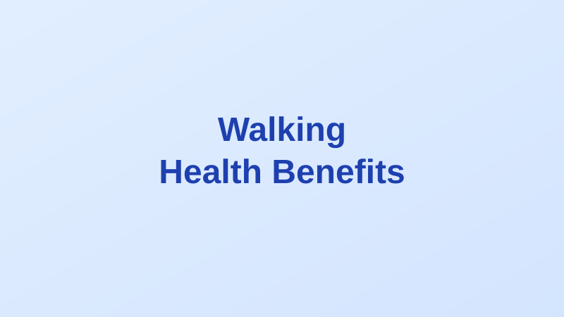

How Many Steps a Day Do You Really Need? The 10,000-Step Myth, Debunked
Written by Sarah Mitchell
Health & Wellness Writer • Published: April 5, 2026 • 6 min read
If you own a fitness tracker, you've probably been told to aim for 10,000 steps a day. But where did this number come from — and is it actually backed by science? The answer may surprise you: the 10,000-step target originated from a 1965 Japanese marketing campaign for a pedometer called "Manpo-kei" (which literally translates to "10,000-step meter"). It was never based on medical research.
So what does the actual science say? Quite a lot, and the findings are encouraging — especially if 10,000 steps feels out of reach.
What the Research Shows
A large meta-analysis published in The Lancet in 2022, analyzing data from over 47,000 adults, found that health benefits from walking begin well below 10,000 steps:
- For adults under 60, mortality risk decreased with up to about 8,000-10,000 steps per day
- For adults 60 and older, the sweet spot was around 6,000-8,000 steps per day, with diminishing returns beyond that
- Importantly, every additional step helped — even going from 3,000 to 5,000 steps showed meaningful health improvements
(Paluch et al., 2022 — The Lancet Public Health)
Why Walking Matters for Americans
The average American walks only about 3,000-4,000 steps per day — far below what research considers optimal. The United States is largely designed around car transportation, with many communities lacking walkable infrastructure.
According to the CDC, only about 24% of American adults meet the federal guidelines for both aerobic and muscle-strengthening activity. Physical inactivity costs the U.S. healthcare system an estimated $117 billion annually.
Walking is particularly valuable because it:
- Requires no equipment, gym membership, or special skills
- Is low-impact and accessible for most fitness levels
- Can be done almost anywhere — even indoors at a mall or on a treadmill
- Has been shown to reduce risk of heart disease, type 2 diabetes, certain cancers, and depression
Walking Speed Matters Too
Research from the University of Sydney found that walking at a brisk pace (about 3-4 mph, or the pace where you can talk but not easily sing) provided additional health benefits beyond step count alone. Brisk walkers had a lower risk of cardiovascular disease and all-cause mortality compared to those who walked slowly, even when total step counts were similar (del Pozo Cruz et al., 2022 — JAMA Internal Medicine).
Practical Tips to Walk More
- Start where you are: If you're at 3,000 steps, aim for 4,000 first. Small increments matter
- Take a post-meal walk: Even 10-15 minutes after dinner can improve blood sugar regulation
- Walk during phone calls: An easy way to add hundreds of steps without changing your schedule
- Park farther away: A classic tip that actually works
- Use a tracker: Awareness alone tends to increase daily movement
- Walk with someone: Social accountability makes the habit stick
Disclaimer: This article is for informational purposes only and is not medical advice. If you have a medical condition that affects mobility, consult your healthcare provider before starting a new exercise routine.
Sarah Mitchell
Sarah is a health and wellness writer focused on making scientific research accessible to everyday readers.